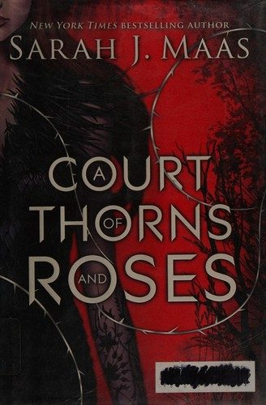
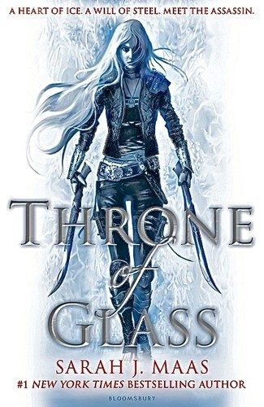
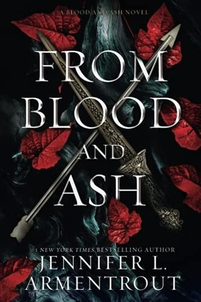
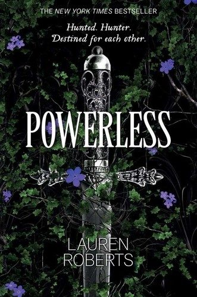
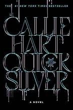
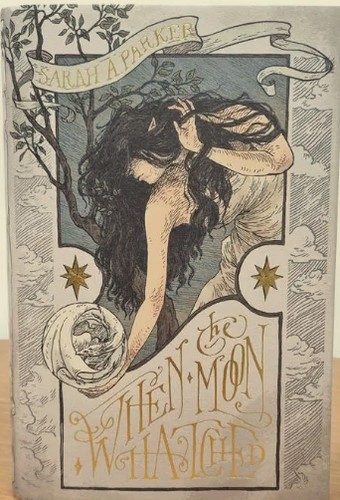
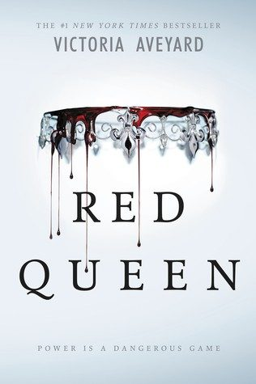
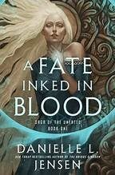

1.
The Serpent and the Wings of Night
by Carissa Broadbent
A human raised by a vampire king enters a deadly tournament where the only way out is to win. Dark, lush and full of morally grey choices.
Finished Fourth Wing and need more dragons, deadly training and a love interest you shouldn't trust? These romantasy picks hit the same mix of high stakes, sharp banter and slow-burn tension.
A human raised by a vampire king enters a deadly tournament where the only way out is to win. Dark, lush and full of morally grey choices.

A huntress is dragged into the faerie lands after killing a wolf she shouldn't have. The series that started the romantasy wave.

An assassin fights her way through a royal competition for her freedom. Starts as a fun ride and grows into an epic series.

A chosen maiden falls for the guard sworn to protect her, and nothing about her world is what she was told.

In a kingdom that hunts the powerless, an ordinary girl hides in plain sight during a royal trial. Fast, addictive enemies-to-lovers.

Two rival reporters write through a war between gods, and a magical typewriter connects them in ways they don't expect.
Audible usually gives new members a free trial: pick an audiobook with your credit and keep it, even if you cancel before the trial ends. Kindle Unlimited also has a free trial with thousands of romantasy and romance titles included.
Try Audible free (paid link) Try Kindle Unlimited (paid link)
A thief with a secret is pulled into the fae realm by a mysterious, infuriating warrior. Heavy on banter and slow burn.

A mortal girl raised in the High Court of Faerie plays a dangerous game of politics against a cruel prince.

A woman with no memory is hunted across a world of dragons and the riders who bond with them. Big, dramatic romantasy.
A princess trained as a spy marries an enemy king to bring his kingdom down. Then she starts falling for him.

A girl with common blood discovers a power she shouldn't have and is forced into the royal court that rules over her.

A Viking-inspired romantasy about a shieldmaiden whose hidden magic makes her the center of a war for the throne.
Audible usually gives new members a free trial: pick an audiobook with your credit and keep it, even if you cancel before the trial ends. Kindle Unlimited also has a free trial with thousands of romantasy and romance titles included.
Try Audible free (paid link) Try Kindle Unlimited (paid link)